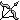

The Savilsh People
The Savilsh People Home
HomePhonology

i. Consonants
 This first table documents all the consonants in the Savilsh language. The columns describe where in the mouth or throat the phoneme (a singular unit of sound) is articulated, while the rows describe how the phoneme is articulated. For example, the [f] sound is in the column labial-dental because the sound requires the use of your lips (labial) and teeth (dental). It's in the fricative row because the airflow requires friction. As the columns descend from left to right, the placement gets deeper in your mouth and throat. Many of these phonemes can be articulated in subtly different places and in subtly different ways, so instead of using tediously precise terminology, I chose to simplify most of the chart and phonemes for the sake of approachability and world-building.
This first table documents all the consonants in the Savilsh language. The columns describe where in the mouth or throat the phoneme (a singular unit of sound) is articulated, while the rows describe how the phoneme is articulated. For example, the [f] sound is in the column labial-dental because the sound requires the use of your lips (labial) and teeth (dental). It's in the fricative row because the airflow requires friction. As the columns descend from left to right, the placement gets deeper in your mouth and throat. Many of these phonemes can be articulated in subtly different places and in subtly different ways, so instead of using tediously precise terminology, I chose to simplify most of the chart and phonemes for the sake of approachability and world-building.
| Labial | Labial-Dental | Dental | Alveolar | Palatal | Velar | Glottal | ||
|---|---|---|---|---|---|---|---|---|
| Nasal | Voiced | m | n | ŋ | ||||
| Stop | Preaspirated | ʰp | ʰt | ʰk | ||||
| Voiceless | p | t | k | ʔ | ||||
| Voiced | b | d | g | |||||
| Affricate | Preaspirated | ʰʦ | ʰʧ | |||||
| Voiceless | ʦ | ʧ | ||||||
| Voiced | ʤ | |||||||
| Fricative | Preaspirated | ʰf | ||||||
| Voiceless | f | s̪ | s̺ | ʃ | x | |||
| Voiced | v | ʒ | ||||||
| Approximant | Voiced | l | j |
 If you speak English, there are some symbols you recognize and some symbols that you don't from the Consonant Table. Most of the Latin symbols represent the same phonemes as in the English alphabet; the only exceptions are [x] and [j]. [x] makes a guttural h-like sound that you can find in Scottish English words such as in "loch," while [j] is the "y" in "yellow." Most of the other symbols also appear in English's phonology: ʤ appears in "jump," ʦ appears in "cats," ʧ appears in "church," ʃ appears in "shame," ʒ appears in "vision," ŋ appears in "hung," and ʔ is the constriction of airflow in the words "uh-oh" and "but-ton" (button).
If you speak English, there are some symbols you recognize and some symbols that you don't from the Consonant Table. Most of the Latin symbols represent the same phonemes as in the English alphabet; the only exceptions are [x] and [j]. [x] makes a guttural h-like sound that you can find in Scottish English words such as in "loch," while [j] is the "y" in "yellow." Most of the other symbols also appear in English's phonology: ʤ appears in "jump," ʦ appears in "cats," ʧ appears in "church," ʃ appears in "shame," ʒ appears in "vision," ŋ appears in "hung," and ʔ is the constriction of airflow in the words "uh-oh" and "but-ton" (button).
 However, there are certain diacritics that modifies the phonemes, and most of these additions differentiates the phonemes from those found in English (milage may very depending on dialect). The [s̪] and [s̺] make the familiar "s" sound in English, but there is a subtle difference between how they are pronounced. The [s̪] is the "s" that English speakers know. In fact, just a simple [s] is more commonly used for this sound, but I added a diacritic to mark it differently from [s̺]. [s̺] is made with the tongue resting further behind the teeth rather than pressed against them.
However, there are certain diacritics that modifies the phonemes, and most of these additions differentiates the phonemes from those found in English (milage may very depending on dialect). The [s̪] and [s̺] make the familiar "s" sound in English, but there is a subtle difference between how they are pronounced. The [s̪] is the "s" that English speakers know. In fact, just a simple [s] is more commonly used for this sound, but I added a diacritic to mark it differently from [s̺]. [s̺] is made with the tongue resting further behind the teeth rather than pressed against them.
Fun Fact!
The Basque language is unlike all other European languages, because it uses both types of [s] in this way. This is because it evolved from a pre-Indo-European language — a language that was spoken in Europe during the neolithic era!
 The other diacritic, " ʰ◌", represents an additional small breath of air before the closure of a sound, called preasipration. A few languages have this feature, but the most important to point out are the Sámi languages, which I drew inspiration from because a regional subculture of Savil has domesticated reindeer-like animals, much like how many Sámi cultures tame reindeer.
The other diacritic, " ʰ◌", represents an additional small breath of air before the closure of a sound, called preasipration. A few languages have this feature, but the most important to point out are the Sámi languages, which I drew inspiration from because a regional subculture of Savil has domesticated reindeer-like animals, much like how many Sámi cultures tame reindeer.
ii. Vowels
 Now here, it gets a little more complicated. The same rules apply to the layout of this table: columns are where, rows are how. However, many of the symbols are misleading! [i] doesn't make the English short "i" vowel sound, but instead, it makes the "e" sound in "free." [ɪ] is the "i" you know from "bit." [u] is also misleading, because it's the "oo" sound in "boot!" [ʊ] looks unfamiliar, although you know it as the "ou" sound in "could." Another unfamiliar symbol, [ə], is actually the most common vowel in English, yet it doesn't have its own symbol in the English alphabet! It is the second "a" in "alpha," the second e in "elephant," the "i" in "pencil," the "o" in "phantom," the "u" in "up," and the "y" in "vinyl." [e] is the halfway point between [i] and [ɛ], where [ɛ] is the "e" in "bed." [ɔ] is the "ough" in "thought." [a] is what you think it is, the "a" in "bad."
Now here, it gets a little more complicated. The same rules apply to the layout of this table: columns are where, rows are how. However, many of the symbols are misleading! [i] doesn't make the English short "i" vowel sound, but instead, it makes the "e" sound in "free." [ɪ] is the "i" you know from "bit." [u] is also misleading, because it's the "oo" sound in "boot!" [ʊ] looks unfamiliar, although you know it as the "ou" sound in "could." Another unfamiliar symbol, [ə], is actually the most common vowel in English, yet it doesn't have its own symbol in the English alphabet! It is the second "a" in "alpha," the second e in "elephant," the "i" in "pencil," the "o" in "phantom," the "u" in "up," and the "y" in "vinyl." [e] is the halfway point between [i] and [ɛ], where [ɛ] is the "e" in "bed." [ɔ] is the "ough" in "thought." [a] is what you think it is, the "a" in "bad."
| Front | Central | Back | |
|---|---|---|---|
| Close | i | u | |
| Near-Close | ɪ | ʊ | |
| Close-Mid | e | ||
| Mid | ə | ||
| Open-Mid | ɛ | ɔ | |
| Open | a |
 You now might be thinking... if you have the short "i," where's the long "i"? Well, that's complicated because the "long i" of English isn't related to the articulation of [e]. The classification is a remnant of a huge vowel shift in English, but for the purposes of this webpage, that isn't important. What is important is that you understand what a diphthongs is, which is a glide between 2 vowels. "No highway cowboy" has five diphthongs, which are [noʊ ˈhaɪweɪ ˈkaʊbɔɪ]! All of these are in Salvish: [aɪ], [eɪ], [aʊ], and [ɔɪ]."
You now might be thinking... if you have the short "i," where's the long "i"? Well, that's complicated because the "long i" of English isn't related to the articulation of [e]. The classification is a remnant of a huge vowel shift in English, but for the purposes of this webpage, that isn't important. What is important is that you understand what a diphthongs is, which is a glide between 2 vowels. "No highway cowboy" has five diphthongs, which are [noʊ ˈhaɪweɪ ˈkaʊbɔɪ]! All of these are in Salvish: [aɪ], [eɪ], [aʊ], and [ɔɪ]."
iii. Phonotactics
 Phonotactics are the laws in a language that govern which combinations of phonemes can exist. It is why languages with similar phonologies can have a distinct and recognizable sound from each other.
Phonotactics are the laws in a language that govern which combinations of phonemes can exist. It is why languages with similar phonologies can have a distinct and recognizable sound from each other.
- [p],[t],[k],[ʦ],[ʧ], and [f] are all preaspirated following an open vowel.
- [n] can't end a word, but [ŋ] can.
- [g] can only be surrounded by vowels, follow an [x], or precede an [n].
- This list is unfinished!